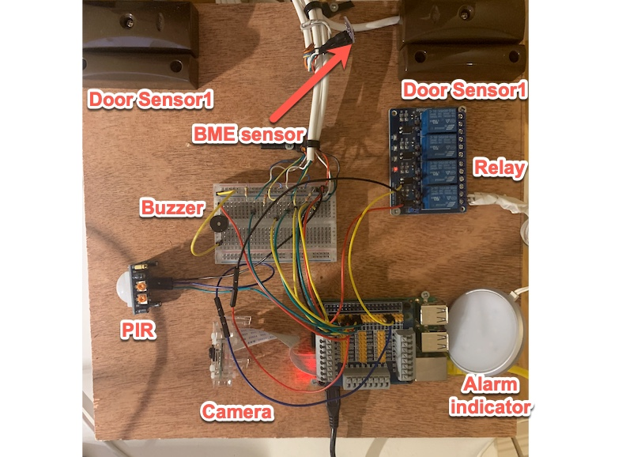

Welcome to the latest in Intruder Alarms

Introduction
This is a simple home automation project with a number of door sensors (tamber and alarm status), PIR devices with alerts given via a sounder. Alerts of change of status will be sent to the user via email or other communications available from Wia.A photo and video are taken via a camera when the system is activated and the intruder alarm is triggered.
The door sensors and PIR are added via GPIO to a raspberry PI along with LEDs to show that the system is set etc.
The setting of the Intruder alarm was completed via a Blynk app
From a data perspective I intend using Wia.io as MQTT broker.
For lighting in the shed I would use a 5V/240V relay to trigger a light via a web app.
Temperature measurement in the shed will be taken via GY-BME280 device. Alerts will be sent if the temperature/humdity go under a certain range so as any sensitive equipment in the shed can be removed.
The data from the Intruder Alarm and Automation will be logged into a mySql database for further interrogation
This intruder alarm takes advantage of the raspberry Pi, its physical computing and setup.As part of this, I've used the Wia and Blynk interfaces as MQTT brokers